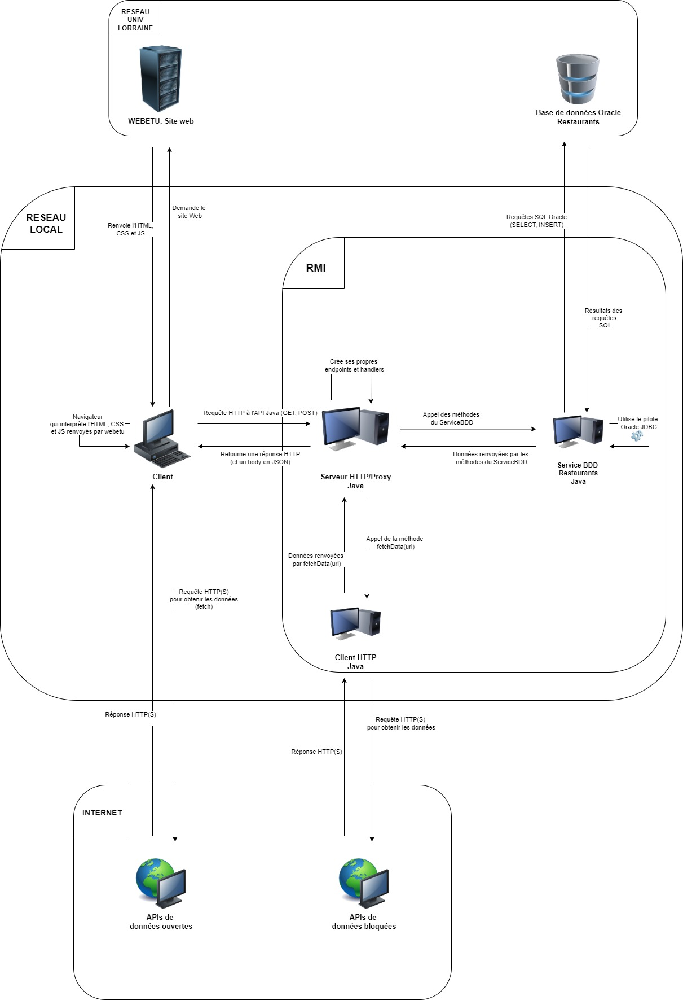

Compte Rendu
Introduction
Ce projet s'inscrit dans le cadre de la SAE visant à développer une application répartie permettant d'afficher des informations variées sur la ville de Nancy via une carte interactive utilisant Leaflet. L'objectif principal est de fournir une application accessible depuis un navigateur web capable d'intégrer et de visualiser des données hétérogènes provenant de sources internes et externes. Certaines informations nécessitent l'utilisation d'un proxy pour contourner les restrictions CORS (Cross-Origin Resource Sharing).
Le projet se compose de plusieurs modules intégrés accessibles depuis un site web hébergé sur webetu. Ces modules comprennent l'interrogation de bases de données via des services RMI, l'intégration de données ouvertes ainsi que la visualisation et la gestion de données en temps réel.
Objectifs du Projet
- Créer une carte interactive centrée sur Nancy :
- Développer une carte lisible depuis un navigateur en utilisant la bibliothèque Leaflet centrée sur la ville de Nancy.
- Ajouter sur cette carte les stations Vélib avec les détails suivants :
- L'adresse de chaque station Vélib.
- Le nombre de vélos disponibles à chaque station.
- Le nombre de places de parking libres à chaque station.
- Implémenter un proxy HTTP avec la classe HttpServer :
- Mettre en place un proxy HTTP servant d'intermédiaire entre le site web et les données externes bloquées par les restrictions CORS.
- Assurer que ce proxy permette de relayer les requêtes et les réponses.
- Proposer deux services RMI utilisés par le proxy :
- Développer un service RMI pour la gestion des restaurants et pour accéder aux données bloquées.
- Utiliser ces services pour ajouter des informations à l’affichage de la carte.
- Ajouter des établissements et des incidents sur la carte :
- Intégrer les établissements d'enseignement supérieur de Nancy sur la carte avec leurs détails spécifiques.
- Afficher les lieux des incidents prévus incluant l'adresse exacte, la cause de l'incident et les dates d'incidence.
- Enrichir le site avec des fonctionnalités supplémentaires :
- Afficher la météo des prochaines heures sur la carte pour offrir des informations météorologiques en temps réel.
- Permettre aux utilisateurs d'enregistrer un nouveau restaurant en cliquant sur sa localisation sur la carte.
- Développer un service générique qui, lorsqu'une URL est bloquée par le navigateur, tente automatiquement de récupérer son contenu via le proxy.
Ces objectifs structurent le projet en différentes phases de développement, chacune apportant des fonctionnalités pour ainsi avoir une application complète et fonctionnelle.
Analyse Initiale
Schéma Complet de l'Architecture
L'architecture de notre application répartie est illustrée dans l’annexe :

Description des Technologies
- Leaflet : Bibliothèque JavaScript pour créer des cartes interactives.
- Java RMI : Interface permettant l'appel de méthodes à distance sur des objets.
- HttpClient et HttpServer : Classes Java utilisées pour effectuer des requêtes HTTP et mettre en place un serveur HTTP.
- Base de données Oracle : Utilisée pour stocker les informations sur les restaurants.
- JSON : Format de données utilisé pour les échanges entre le client et le serveur.
Développement et Implémentation
Modules Développés
Service RMI
Structure de la Base de Données
La base de données est composée de deux tables :
- Restaurants : Contient les informations sur les restaurants (RestaurantID, Nom, Adresse, Latitude, Longitude).
- Reservations : Contient les informations sur les réservations (NumRes, Nom, Prenom, nbConvives, numTel, RestaurantID).
Fonctionnalités RMI
Le service RMI contient une interface ServiceBDD avec les méthodes suivantes :
- getAllRestaurant() : Récupère les informations de tous les restaurants.
- reserverTable(nom, prenom, nbPersonne, tel, idRestaurant) : Permet de faire une réservation dans un restaurant.
- ajouterRestaurant(nom, adresse, latitude, longitude) : Permet d’ajouter un nouveau restaurant.
L'implémentation de cette interface est réalisée dans le fichier ServiceRestaurant.java, où les réponses sont formatées en JSON. Le fichier LancerServiceRMI.java initialise et met à disposition le service RMI.
Pour accéder à ce service, on utilise un HttpServer qui fait la liaison entre le service RMI du restaurant et le site web :
Serveur HTTP/Proxy HTTP
Implémentation du Proxy
Dans le cadre de ce projet, un serveur HTTP en Java a été développé pour servir d'intermédiaire entre le site web et diverses sources de données, dont le service RMI qui permet d’accéder à la base de données de restaurants. De plus, le client HTTP permet d'accéder aux données bloquées par les restrictions CORS en agissant comme un proxy pour relayer les requêtes vers les APIs externes et récupérer les informations.
Fichiers Java du Serveur/Proxy HTTP
-
LancerHttpServer.java :
Ce fichier initialise et lance le serveur HTTP. Il configure les différents endpoints et handlers pour traiter les requêtes entrantes. Le serveur écoute sur un port spécifique et redirige les requêtes vers les handlers appropriés.
-
ProxyHandler.java :
Le ProxyHandler gère les requêtes vers des APIs externes qui pourraient être bloquées par les restrictions CORS. Il reçoit la requête, la retransmet à la destination cible, puis renvoie la réponse au client.
-
DataService.java et DataServiceImpl.java :
Ces fichiers définissent et implémentent les services nécessaires pour interagir avec les données bloquées par les restrictions CORS. Ils jouent le rôle de proxy en retransmettant les requêtes vers les APIs externes et en renvoyant les réponses.
-
PostAddRestaurant.java :
Ce handler gère les requêtes POST pour ajouter de nouveaux restaurants dans la base de données. Il reçoit les données du restaurant, les traite, et les insère dans la base de données via les services RMI.
-
PostHandler.java :
Ce handler gère les requêtes POST pour les réservations de table dans les restaurants. Il reçoit les détails de la réservation, les traite, et les enregistre dans la base de données via les services RMI.
-
RestaurantHandler.java :
Ce handler gère les requêtes pour récupérer la liste des restaurants depuis la base de données. Il interagit avec les services RMI pour obtenir les données nécessaires et les renvoie au client en format JSON.
-
ServiceHttpRestaurant.java :
Ce fichier contient les méthodes de service pour interagir avec la base de données des restaurants via RMI. Il définit les méthodes d'ajout et de récupération des restaurants.
Fonctionnalités du Serveur HTTP et Proxy
-
Relai des Requêtes Bloquées (CORS) :
Le ProxyHandler joue un rôle crucial en permettant aux requêtes bloquées par les restrictions CORS d'atteindre leurs destinations. Il reçoit les requêtes du client, utilise DataService pour les retransmettre à l'API externe, puis renvoie la réponse au client, assurant l’accès aux données.
-
Gestion des Restaurants :
Le serveur HTTP gère également les opérations de création et de récupération des restaurants. Le handler PostAddRestaurant reçoit les données des nouveaux restaurants via des requêtes POST et les ajoute à la base de données via les services RMI. Le handler RestaurantHandler permet de récupérer la liste des restaurants en interagissant avec les services RMI et en renvoyant les données au client en format JSON.
-
Intégration avec la Carte Leaflet :
Les données récupérées par le serveur/proxy HTTP sont utilisées pour remplir la carte interactive Leaflet.
Est-il Responsable de Contourner la Politique de Sécurité de Votre Navigateur ?
Contourner la politique de sécurité d’un navigateur, en particulier les restrictions imposées par CORS (Cross-Origin Resource Sharing), peut sembler une solution pratique pour accéder à des ressources bloquées. Cependant, cette pratique soulève plusieurs questions concernant la responsabilité, la sécurité et l'éthique.
Qu'est-ce que la Politique de Sécurité CORS ?
CORS est une politique de sécurité mise en place par les navigateurs web pour protéger les utilisateurs contre des attaques telles que le Cross-Site Request Forgery (CSRF). Cette politique empêche un site web d'effectuer des requêtes vers un domaine différent de celui d'où il a été chargé, à moins que le serveur de destination n'autorise explicitement ces requêtes en incluant des en-têtes spécifiques.
Pourquoi Contourner CORS ?
Dans le contexte de ce projet, l'équipe a utilisé un proxy pour contourner les restrictions CORS afin d'accéder à des données pour l'application. Cette approche a été jugée nécessaire car les créateurs de l'API des incidents de circulation ont laissé la sécurité CORS activée sans réelle justification, étant donné qu'il n'y a pas de connexions ou de fonctionnalités impliquant des tokens d'autorisation sensibles. À titre de comparaison, pour des API critiques comme celles des banques, laisser une telle sécurité est indispensable car elle protège des actions potentiellement malveillantes comme des virements de fonds non autorisés.
Les Risques Associés
-
Sécurité :
- Exposition aux Attaques : En contournant CORS, l'application peut involontairement être exposée à des attaques malveillantes. Si le proxy n'est pas correctement sécurisé, des attaquants pourraient exploiter cette vulnérabilité pour injecter des contenus malicieux ou pour accéder à des données sensibles.
- Manque de Validation : Le proxy doit valider toutes les requêtes et les réponses pour s'assurer qu'aucune donnée malicieuse n'est transmise. Sans cette validation, le risque d'introduire des vulnérabilités dans l'application augmente.
-
Responsabilité :
- Non-Respect des Politiques de Serveurs : En contournant les restrictions CORS, l'équipe peut aller à l'encontre des politiques de sécurité définies par les serveurs tiers. Ces politiques sont en place pour protéger les données et les utilisateurs, et les contourner peut être considéré comme une violation de ces règles.
- Imprévus Juridiques : Il pourrait y avoir des implications légales à contourner des mesures de sécurité, surtout si cela est fait sans l'autorisation des propriétaires des ressources.
Pratiques Responsables et Alternatives
- Obtenir les Autorisations Nécessaires : Contactez les administrateurs des API ou des ressources pour obtenir les autorisations nécessaires. Ils peuvent ajouter notre domaine à la liste blanche, permettant ainsi un accès direct sans besoin de contournement.
- Utiliser des Services Proposés Officiellement : De nombreuses API proposent des méthodes officielles pour accéder aux données en toute sécurité. Utilisez des clés API et suivez les meilleures pratiques recommandées par les fournisseurs de services.
- Sécuriser le Proxy : Si l'utilisation d'un proxy est inévitable, assurez-vous que le proxy est bien sécurisé. Implémentez des mesures de validation strictes pour filtrer les requêtes et les réponses, et limitez les accès uniquement aux domaines et ressources nécessaires.
- Éducation et Sensibilisation : Informez votre équipe et vos utilisateurs des risques associés au contournement des politiques de sécurité. Encouragez une culture de sécurité et de respect des règles établies par les fournisseurs de services.
Conclusion
Contourner la politique de sécurité d’un navigateur, bien que parfois nécessaire comme dans notre cas, comporte des risques importants et soulève des questions éthiques et légales. Il est essentiel d'évaluer ces risques et de chercher des alternatives plus sécurisées et conformes.
Client Web
Le site web de notre projet permet aux utilisateurs de visualiser diverses informations sur la ville de Nancy à l'aide d'une carte Leaflet. Voici une présentation des différents fichiers JavaScript utilisés pour le développement du site web :
Fichiers JavaScript Principaux
-
index.js :
Le fichier index.js est le point d'entrée principal du site web. Il initialise la carte Leaflet dès que le DOM est complètement chargé.
-
dataloader.js :
Ce fichier contient la fonction fetchWithProxy de récupération des données, en gérant les restrictions CORS via un proxy géré en java.
-
config.js :
Ce fichier contient les constantes de configuration, incluant les URLs des différentes APIs utilisées dans le projet.
-
map_ui.js :
Ce fichier contient les fonctions principales pour la gestion et l'affichage des données sur la carte Leaflet.
Récupération des Données Ouvertes et Gestion des Restrictions CORS
Le processus de récupération des données et la gestion des restrictions CORS sont centralisés autour de la fonction fetchWithProxy.
Récupération des Données Ouvertes
Pour obtenir des informations telles que les stations Vélib, le site effectue des requêtes HTTP vers des APIs ouvertes. La fonction fetchWithProxy est utilisée pour envoyer ces requêtes et traiter les réponses.
- Requête Initiale : La fonction envoie une requête HTTP directe à l'API cible en utilisant l'URL spécifiée.
- Réponse de l'API : Si l'API répond sans problème (statut HTTP 200), les données sont récupérées et retournées sous forme de JSON.
Gestion des Données Bloquées par les Restrictions CORS
Lorsqu'une requête est bloquée par les restrictions CORS, la fonction fetchWithProxy implémente une solution pour contourner ce problème en utilisant un proxy.
- Détection du Problème CORS :
- Erreur CORS : Si la requête initiale échoue à cause des restrictions CORS, une erreur est levée.
- Utilisation du Proxy : La fonction construit une nouvelle URL en incluant l'URL cible dans une requête vers un proxy interne (serveur HTTP en Java configuré pour relayer les requêtes).
- Relais via le Proxy :
- Requête au Proxy : Une nouvelle requête est envoyée au serveur proxy, qui est chargé de relayer la requête vers l'API externe.
- Réponse du Proxy : Le proxy reçoit la réponse de l'API externe, la renvoie au site web, permettant ainsi de contourner les restrictions CORS.